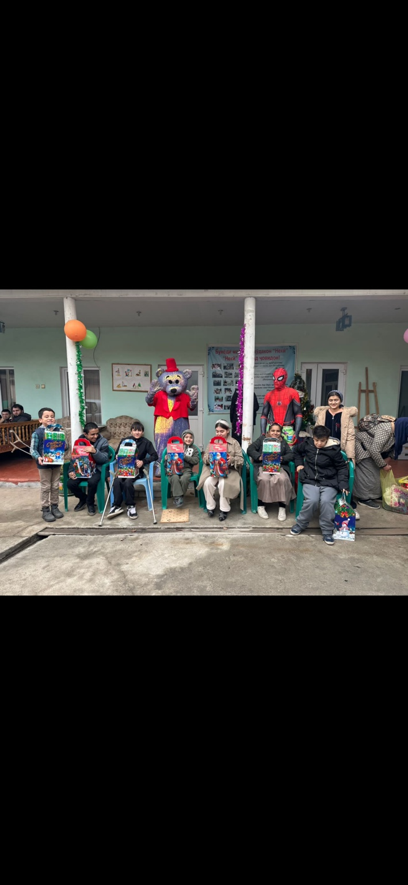
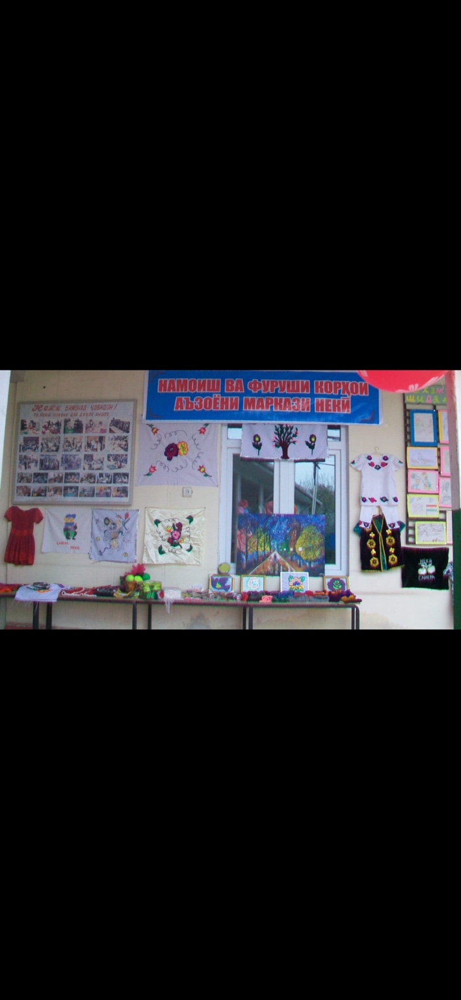
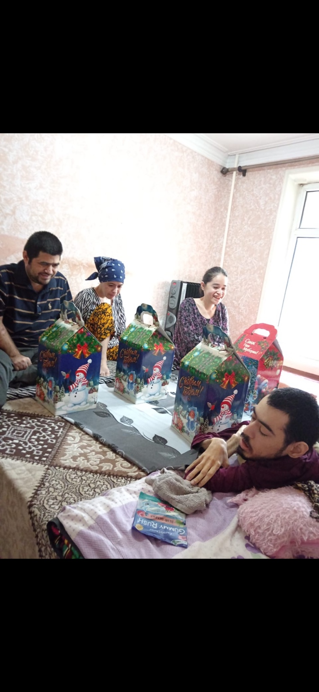
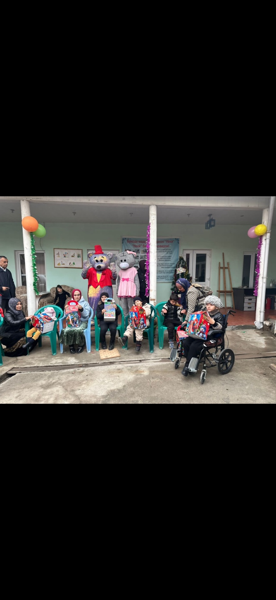
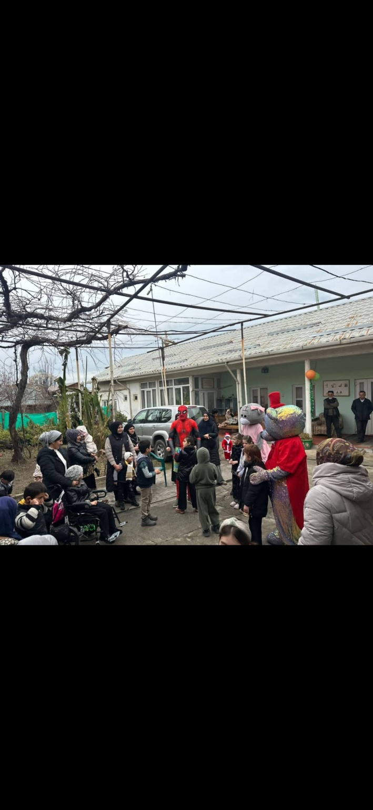
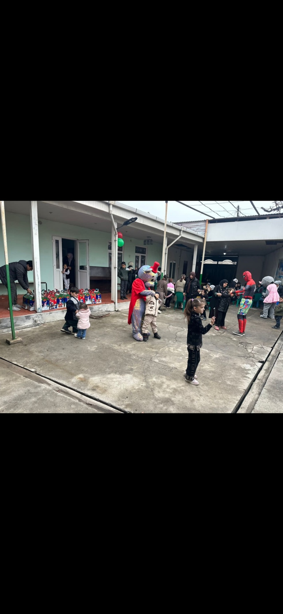
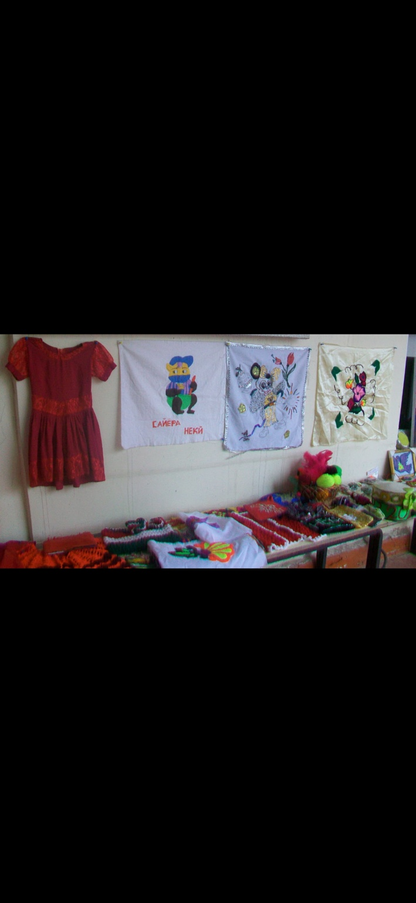
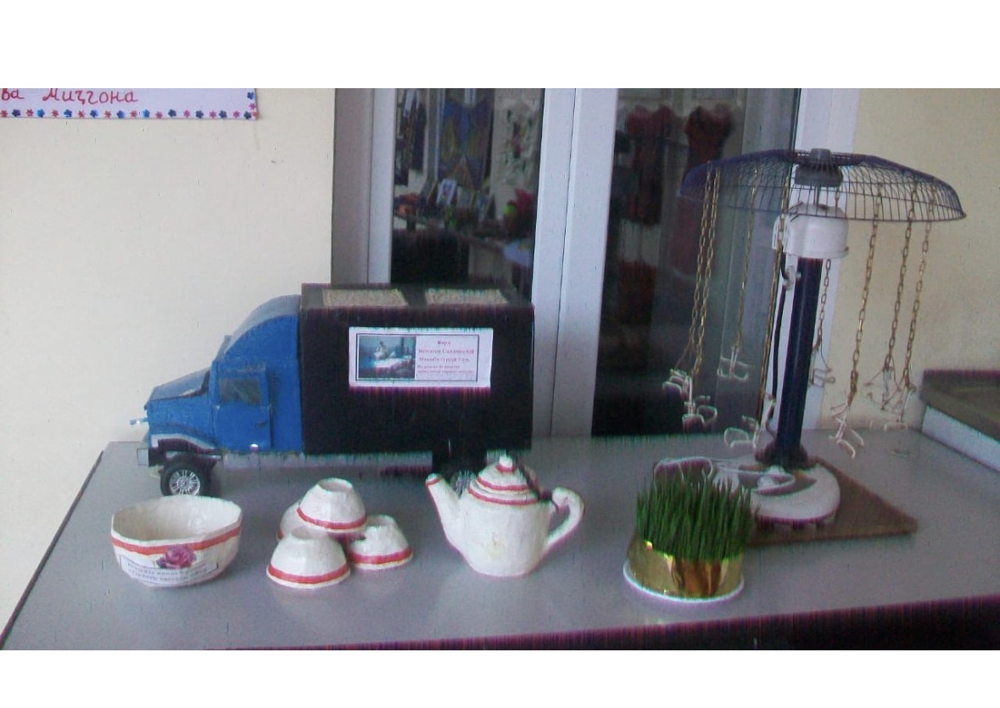
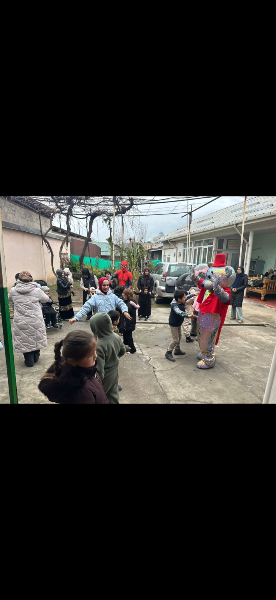
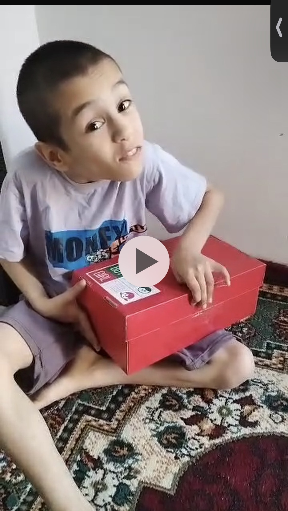

Supporting children. Strengthening families.
Foundation Neki works to support children with disabilities and their families through community activities, learning opportunities and practical assistance.

A community built around inclusion and opportunity
Foundation Neki is a public organisation based in Dushanbe, Tajikistan. Historical material provided by the organisation describes its work supporting children with disabilities and their families, including education, rehabilitation, practical assistance and creative activities.
The organisation’s 2009 publication records a history beginning in 1999. We are preparing this website to share its story, activities and future plans.

Practical support and opportunities to participate
Our historical materials and photographs show several areas of activity.
Family and community support
Community gatherings and activities that bring children and families together.
Inclusive celebrations
Celebrations and gift-giving activities designed to create joyful shared experiences.
Creative skills
Handicrafts, sewing, embroidery, drawing and opportunities to display creative work.
A story that began in 1999
A 2009 organisational publication supplied for this website describes Foundation Neki’s registration history and reports support for children and families. We will add verified milestones and updated information as records are confirmed.
Year of establishment stated in the historical publication
Moments from the community
A selection of photographs shared by the organisation.








Connect with Foundation Neki
We welcome enquiries from families, community partners, supporters and organisations interested in inclusive opportunities for children.
Contact details
Director: Rahmonov Siddiq
Location: Dushanbe, Tajikistan
Phone: +992 918 629 135
Email: nekifound1999@gmail.com